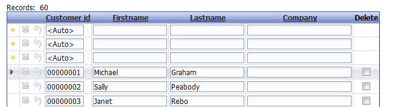

New Record Rows Position
Property name 'New record rows position' ('Update Settings' pane)
You can now specify if the empty rows, used to add new records to an editable grid, should be positioned above, or below the existing records. Previously, the new record rows were always shown below the existing records.

Grid showing new record rows positioned above existing rows.